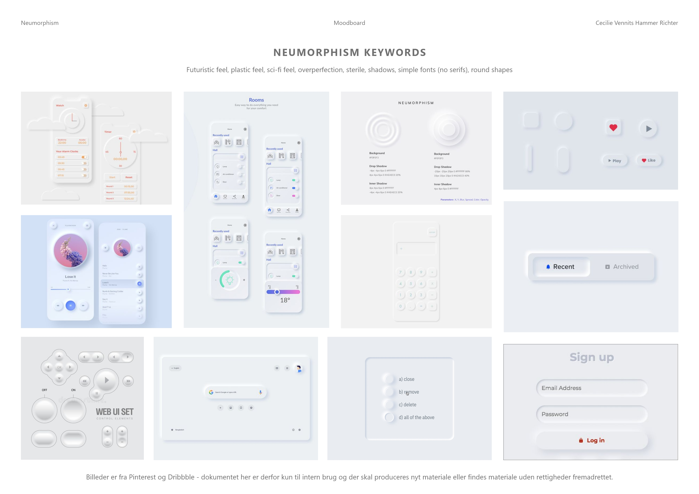

Tema 2 - Grundlæggende HTML
Responsive site
Hvad gik opgaven ud på?
Opgaven bestod af flere mindre delafleveringer og mundede ud i at vi skulle aflevere vores første responsive site.En af de første opgaver vi fik var at vi, som del af en gruppe, fik en stil som vi skulle analysere og lave et pitch om. Min gruppe fik Neumorphism, hvilket jeg fandt virkelig spændende!
Netop fordi jeg synes at Neumorphism var en interesseret stil, valgte jeg at tage den delvist videre med ind i næste opgave, som bestod i at vi skulle lave content til vores kommende site. Her havde jeg nogle gamle Illustrator tegninger liggende, som jeg valgte at gå videre med. Vi lavede derudover også et splashbillede i Photoshop samt et ikon.
Selve strukturen for sitet var allerede bestemt af lærerne, så vi havde en wireframe at gå ud fra. Resultatet af opgaven endte med at være et simpelt, responsivt site, og har lagt baggrunde for de senere responsive sites vi har lavet.
Reflektion
Når jeg tænker tilbage på opgaven, kan jeg huske at jeg var virkelig glad for at komme i gang med Adobe XD, som jeg ikke kendte før. Programmet minder jo en del om Illustrator som jeg har erfaring med i forvejen, så det blev relativt hurtigt nemt at arbejde i.
I forhold til dét at arbejde med en wireframe, syntes jeg at det var virkelig svært. Både fordi jeg aldrig havde set sådan et før, og fordi Brackets og det at kode var helt nyt for mig. Det var svært, men sjovt!
Når jeg kigger på opgaven nu, kan jeg se, at jeg har rykket mig en masse i forhold til wireframes og kodning! Opgaven var i sig selv svær at forstå dengang, mens den med nye, klogere øjne virker langt mere doable!
Moodboards
I forlængelse af den stilart min gruppe havde fået kort forinden, valgte jeg at forsætte med Neumorphism. En digital stilart, der bygger på et super minimalistisk, rent, nærmest klinisk design med lette skygger.
Moodboards'ne lavede jeg for at give mig selv noget retning på både designdetaljer smat farveskala, som jeg ønskede at lave websitet i.
Styletile
Næste skrift var at lave et styletile, for at konkretisere de tanker jeg havde med Moodboards'ne. Til at starte med havde jeg lavet et Moodboard der havde langt krafitigre farver på overskrifterne, men efter at have set det på prototypen og i koden valgte jeg at ændre det til grå toner. De mange farver støjede for meget og trak det for langt væk fra det neumorphiske look.
Splashbillede
Da vi skulle lave splashbilledet, som skulle være responsivt så det kunne croppes til mobil devices, var det et dilemma fordi Neumorphism jo egentlig ikke har meget med billedmateriale at gøre. Derfor kiggede jeg på inspiration og på mit Moodboard og besluttede at køre det i monokrome toner af lilla, og gøre nogle områder skarpe, mens det meste andet var sløret. Tanken var at det skulle videreføre det taktile og clean look fra Neumorphism.
Billedmateriale
Da mit site skulle være en pretend-webshop der solgte unika produkter, var det lige til højrebenet at tage nogle gamle illustrator tegninger som jeg havde lavet i min fritid.


Tegningerne var lavet på et tidspunkt hvor jeg synes det var sjovt at tegne mere 3-dimisionelt og øve mine færdigheder i Illustrator og realistisk tegning.


Til sidst kom billederne på en baggrund med farver fra moodboardet, og de fik en hårdere slagskygge for at give en mere realistisk effekt.